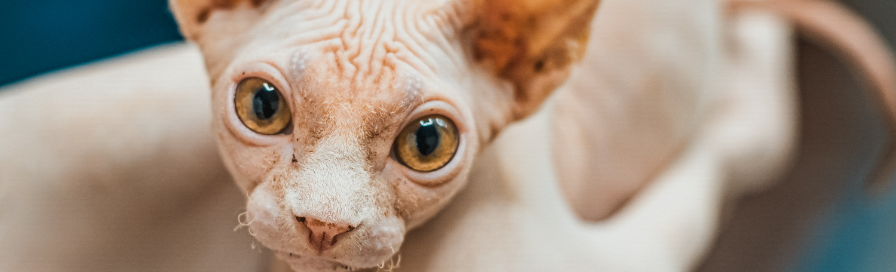
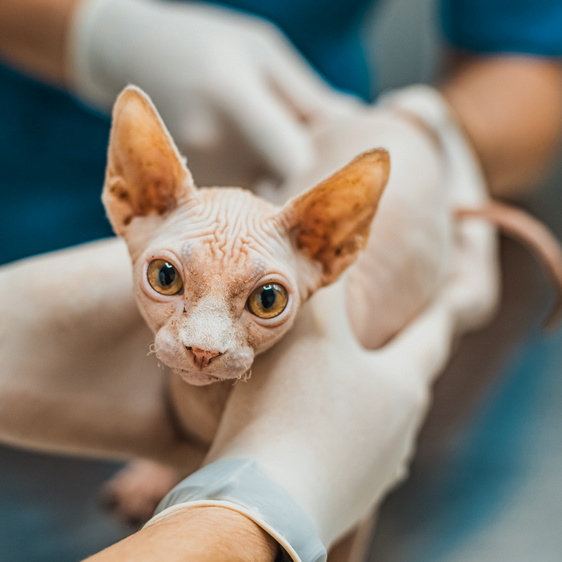
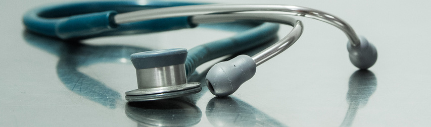

Участковая ветлечебница при Ивацевичской райветстанции работает для того, чтобы предоставить вашим
животным качественную квалифицированную ветеринарную помощь. Мы работаем с такими животными, как кошки и
собаки. А так же- сельскохозяйственные животные.
Наши принципы: диагностика, забота о качестве жизни пациентов, работа по стандартам доказательной
медицины.
Для вашего удобства, прием ведется по предварительной записи


Стараемся предложить вам полный спектр ветеринарный услуг, которые можем обеспечить. Это вакцинация
собак, кошек, лечение внутренних незаразных заболеваний, лечение дерматологических заболеваний. Плановая
и внеплановая хирургия. Прежде всего, кастрация, стерилизация собак и кошек, хирургическое лечение ран.
Есть собственная лаборатория.
Для вашего удобства, прием ведется по предварительной записи.